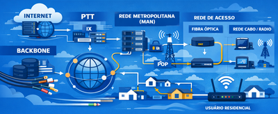
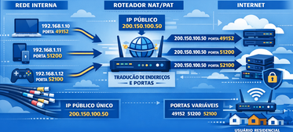
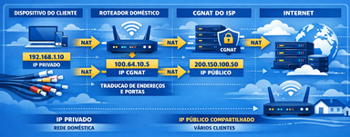
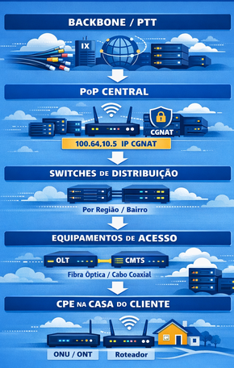

Infraestrutura Física de Redes
AULA 05 - IPs Públicos, ISPs e Como a Internet Chega em Cada Casa

Objetivo da aula: Compreender a diferença entre IPs públicos e privados sob a ótica do mundo real, entender como os ISPs recebem e distribuem endereços IP, conhecer a estrutura de rede de um provedor do backbone até a tomada do cliente, e entender o papel do NAT, CGNAT e IPv6 nesse ecossistema.
1. Recapitulando a Distinção: IP Privado vs. IP Público
Na aula anterior estudamos o endereçamento IP pela perspectiva interna - a rede local, a estação de trabalho, o gateway. Agora vamos ampliar esse olhar para o mundo externo.
IP privado é o endereço usado dentro de uma rede local. Não é roteável na internet - nenhum roteador de backbone encaminha pacotes destinados a endereços privados. Pode se repetir em redes diferentes sem conflito: a rede da sua casa e a rede de uma empresa no Japão podem ter um dispositivo com o IP 192.168.1.10 simultaneamente, sem que isso cause qualquer problema.
IP público é o endereço único no mundo inteiro, roteável na internet. É através dele que sua rede se comunica com qualquer outro ponto do planeta. Não pode se repetir - dois dispositivos com o mesmo IP público causariam conflito de roteamento na internet global.
As faixas reservadas para uso privado (definidas pela RFC 1918) são:
| Faixa | Notação CIDR | Uso típico |
|---|---|---|
| 10.0.0.0 - 10.255.255.255 | 10.0.0.0/8 | Redes corporativas grandes |
| 172.16.0.0 - 172.31.255.255 | 172.16.0.0/12 | Redes corporativas médias |
| 192.168.0.0 - 192.168.255.255 | 192.168.0.0/16 | Redes domésticas e pequenas empresas |
Tudo fora dessas faixas - exceto os endereços especiais estudados na aula anterior - é IP público.
Por que as duas categorias precisam coexistir?
O IPv4 suporta apenas 4,3 bilhões de endereços. O número de dispositivos conectados à internet já ultrapassou esse valor há anos. Sem os IPs privados - que permitem que milhares de dispositivos compartilhem um único IP público através do NAT - a internet como conhecemos seria inviável com IPv4.
2. Quem Controla os IPs Públicos - A Hierarquia de Distribuição
Os endereços IP públicos não são de livre uso. Existe uma hierarquia internacional que controla sua alocação, garantindo que não haja duplicidade em nenhum lugar do mundo.
IANA - Internet Assigned Numbers Authority
No topo da hierarquia está a IANA, operada pela ICANN (Internet Corporation for Assigned Names and Numbers). A IANA é responsável pela coordenação global do espaço de endereçamento IP - ela detém o pool original de todos os endereços IPv4 e IPv6 e distribui grandes blocos para os registros regionais.
Em fevereiro de 2011, a IANA anunciou que havia alocado seus últimos blocos de IPv4 disponíveis. O espaço de endereçamento IPv4 estava, do ponto de vista da IANA, esgotado.
RIRs - Regional Internet Registries
A IANA distribui blocos para cinco registros regionais, cada um responsável por uma área geográfica:
| RIR | Região |
|---|---|
| ARIN | América do Norte |
| LACNIC | América Latina e Caribe |
| RIPE NCC | Europa, Oriente Médio e Ásia Central |
| APNIC | Ásia-Pacífico |
| AFRINIC | África |
Os RIRs recebem blocos da IANA e os redistribuem para ISPs, universidades, empresas e governos dentro de sua região, mediante solicitação e justificativa técnica.
LACNIC - O RIR do Brasil
O LACNIC (Latin America and Caribbean Network Information Centre), sediado em Montevidéu, Uruguai, é o RIR responsável pelo Brasil e por toda a América Latina e Caribe. Em junho de 2014, o LACNIC também esgotou seus blocos IPv4 livres, entrando em política de distribuição restrita - reservando pequenos blocos apenas para casos especiais, como novos entrantes no mercado.
No Brasil, o NIC.br (Núcleo de Informação e Coordenação do Ponto BR) atua como representante do LACNIC e é responsável pelo registro de domínios .br e pela operação dos PTTs nacionais.
ASNs - Autonomous System Numbers
Cada ISP que se conecta à internet global recebe, além de um bloco de IPs, um ASN (Autonomous System Number) - um número único que identifica aquela organização como um sistema autônomo na internet.
O ASN é usado pelos protocolos de roteamento de backbone (especialmente o BGP - Border Gateway Protocol) para que os roteadores de diferentes ISPs saibam como alcançar os blocos IP de cada organização. Quando você acessa um site hospedado nos EUA, seu pacote passa por múltiplos sistemas autônomos - cada um identificado pelo seu ASN - até chegar ao destino.
3. Classes de IPs Públicos e Seus Usos Reais
As classes de endereços estudadas na aula anterior ganham outro significado quando olhamos para quem realmente detém esses blocos no mundo.
Classe A - os grandes blocos históricos
Os blocos Classe A (/8 - 16 milhões de endereços cada) foram alocados nos primórdios da internet, quando ninguém imaginava que o espaço IPv4 se esgotaria. Foram distribuídos generosamente para universidades americanas, militares e grandes corporações:
- MIT detém o bloco 18.0.0.0/8
- Apple detém o bloco 17.0.0.0/8
- Ford Motor Company detém o bloco 19.0.0.0/8
- Departamento de Defesa dos EUA detém múltiplos blocos /8
Hoje esses blocos valem fortunas no mercado secundário de IPs - um único endereço IPv4 público chegou a ser negociado por mais de 50 dólares.
Classe B - ISPs e universidades
Blocos /16 (65 mil endereços) foram alocados para ISPs de médio porte, universidades e empresas multinacionais. Ainda são blocos grandes o suficiente para operar uma rede regional com conforto.
Classe C - o padrão para ISPs menores
Blocos /24 (254 endereços) e agregações de blocos /24 são o que a maioria dos ISPs regionais e provedores de pequeno porte detém. Um ISP de cidade do interior brasileiro típico pode ter alguns blocos /24 ou um bloco /22 (1022 endereços).
O fim do classful routing e o CIDR
O modelo de classes (classful) desperdiçava imensamente o espaço de endereçamento - uma empresa que precisava de 300 endereços era obrigada a receber um bloco Classe B inteiro (65 mil endereços), deixando 64 mil inutilizados.
O CIDR (Classless Inter-Domain Routing), adotado em 1993, eliminou as fronteiras rígidas entre classes e permitiu alocações de tamanho arbitrário - uma empresa que precisa de 300 endereços recebe um /23 (510 endereços), sem desperdício. O CIDR foi uma das medidas que prolongou a vida útil do IPv4 por quase duas décadas além do previsto.
4. O Esgotamento do IPv4
O esgotamento do IPv4 não foi uma surpresa - foi previsto com décadas de antecedência. O que surpreendeu foi a velocidade com que o mundo se conectou.
Por que 4,3 bilhões não foram suficientes:
- Em 1981, quando o IPv4 foi definido, havia menos de 1000 computadores conectados à internet
- Nos anos 1990, a explosão da web comercial conectou milhões de computadores
- Nos anos 2000, smartphones começaram a exigir IPs
- Nos anos 2010, a IoT (Internet of Things) passou a conectar geladeiras, câmeras, sensores industriais, medidores de energia, relógios - cada um exigindo um endereço
A linha do tempo do esgotamento:
| Data | Evento |
|---|---|
| 1993 | CIDR adotado para retardar o esgotamento |
| 1994 | NAT introduzido como solução paliativa |
| Fevereiro 2011 | IANA aloca seus últimos blocos IPv4 |
| Abril 2011 | APNIC (Ásia-Pacífico) esgota seus blocos |
| Setembro 2012 | RIPE NCC (Europa) entra em política restrita |
| Junho 2014 | LACNIC (América Latina) esgota seus blocos livres |
| Setembro 2015 | ARIN (América do Norte) esgota seus blocos |
Após o esgotamento, quem precisava de IPs públicos tinha duas opções: comprar no mercado secundário (de organizações que tinham blocos ociosos) ou adotar IPv6. Os ISPs, porém, encontraram uma terceira saída de curto prazo: o CGNAT.
5. NAT - Como um IP Público Atende Muitos Dispositivos
O NAT (Network Address Translation) é a tecnologia que permite que dezenas ou centenas de dispositivos com IPs privados compartilhem um único IP público para acessar a internet.
Como funciona:
Quando um dispositivo interno (192.168.1.10) envia um pacote para a internet, o roteador intercepta esse pacote e substitui o IP de origem privado pelo IP público da interface WAN - digamos, 200.150.100.50. O pacote chega ao servidor de destino com o IP público como remetente.
Quando o servidor responde, o pacote chega ao roteador com destino 200.150.100.50. O roteador consulta sua tabela NAT - que registra qual dispositivo interno iniciou aquela conexão - e encaminha o pacote para 192.168.1.10.
PAT - Port Address Translation
Na prática, o NAT usado em roteadores domésticos e corporativos é o PAT (também chamado de NAT overload): além de substituir o IP, o roteador também substitui a porta de origem, criando um um mapeamento único para cada conexão. Isso permite que centenas de dispositivos internos façam conexões simultâneas usando um único IP público - cada conexão identificada por uma combinação única de IP público + porta.

Limitações do NAT:
O NAT foi concebido como solução temporária - mas permanece em uso décadas depois. Suas limitações são relevantes para o técnico de infraestrutura:
- Conexões de entrada são bloqueadas por padrão: o NAT só encaminha respostas a conexões iniciadas de dentro. Para hospedar um servidor, câmera IP ou qualquer serviço acessível externamente, é necessário configurar o redirecionamento de portas (port forwarding) manualmente.
- VPNs e protocolos especiais: alguns protocolos não funcionam bem através de NAT e exigem configurações adicionais (NAT traversal).
- Rastreabilidade: como múltiplos usuários compartilham um IP, identificar o responsável por uma conexão específica exige logs detalhados.
6. CGNAT - A Realidade dos ISPs Brasileiros
O CGNAT (Carrier-Grade NAT), também chamado de Large Scale NAT (LSN), é o NAT operado pelo próprio ISP - uma camada adicional de NAT antes do roteador do cliente.
O problema que o CGNAT resolve:
Com o esgotamento do IPv4, muitos ISPs brasileiros - especialmente provedores de fibra óptica regionais (os chamados ISPs de pequeno porte, ou PPPs) - não possuem IPs públicos suficientes para atribuir um a cada cliente. A solução adotada foi o CGNAT: o ISP atribui ao cliente um IP privado (não o público), e faz o NAT internamente antes de entregar o tráfego à internet.
A faixa reservada para CGNAT:
A RFC 6598 reservou especificamente o bloco 100.64.0.0/10 (endereços de 100.64.0.0 a 100.127.255.255) para uso em CGNAT. Esse bloco não é roteável na internet e não conflita com as faixas privadas da RFC 1918. Se o técnico encontrar um cliente com IP nessa faixa, é sinal certo de que está sob CGNAT.
Como o CGNAT funciona na prática:

O cliente está sob duplo NAT - o que amplifica todas as limitações já existentes no NAT simples.
Consequências práticas - o que o técnico precisa saber:
- Abertura de portas impossível sem IP dedicado: o cliente não consegue hospedar nenhum serviço acessível externamente. Port forwarding no roteador doméstico não resolve - o tráfego ainda é bloqueado no CGNAT do ISP.
- Câmeras IP com acesso remoto: sistemas de CFTV que dependem de acesso externo direto não funcionam sob CGNAT. Exigem soluções alternativas como P2P proprietário do fabricante, VPN ou contratação de IP dedicado.
- VPNs site-to-site: VPNs IPSec tradicionais têm dificuldades com CGNAT. Exigem configurações específicas ou protocolos alternativos.
- Jogos online e P2P: alguns jogos e aplicações P2P têm degradação de desempenho sob duplo NAT.
Como identificar se um cliente está sob CGNAT:
- No roteador doméstico, verificar o IP da interface WAN
- Se o IP WAN estiver na faixa 100.64.0.0/10 → CGNAT confirmado
- Se o IP WAN for um IP privado (10.x.x.x, 172.16-31.x.x, 192.168.x.x) → também pode ser CGNAT, dependendo do ISP
- Ferramenta online: acessar
meuip.com.bre comparar com o IP WAN do roteador - se forem diferentes, há NAT em algum ponto
IP público dedicado:
A maioria dos ISPs oferece IP público dedicado como serviço adicional pago. Para clientes que precisam hospedar servidores, câmeras com acesso externo, VPNs corporativas ou qualquer serviço de entrada, o IP dedicado é necessário. É uma informação importante que o técnico de infraestrutura deve saber comunicar ao cliente.
7. A Estrutura de Rede de um ISP - Do Backbone até a Tomada
Para entender como a internet chega em cada casa, é preciso conhecer as camadas de rede que um ISP opera - do núcleo de alta velocidade até o último metro de cabo na residência do cliente.
Backbone - O Núcleo
O backbone é a espinha dorsal da internet - conexões de altíssima capacidade que interligam cidades, países e continentes. Operado por grandes carriers (operadoras de telecomunicações globais), o backbone usa fibra óptica de longa distância com capacidades que chegam a terabits por segundo por par de fibra.
No Brasil, os principais backbones interligam as capitais e grandes centros urbanos. ISPs regionais se conectam ao backbone nacional através de pontos de presença (PoPs) estrategicamente localizados.
PTTs - Pontos de Troca de Tráfego
Os PTTs (Pontos de Troca de Tráfego), conhecidos internacionalmente como IXPs (Internet Exchange Points), são instalações neutras onde ISPs diferentes se interconectam diretamente para trocar tráfego sem precisar passar por um terceiro.
No Brasil, os PTTs são operados pelo IX.br, projeto do NIC.br, e estão presentes em dezenas de cidades - incluindo São Paulo (o maior da América Latina), Rio de Janeiro, Belo Horizonte, Curitiba, Porto Alegre, Salvador, Fortaleza, Recife e outras.
Por que os PTTs importam:
Sem um PTT, se um cliente da operadora A em São Paulo quer acessar um conteúdo hospedado na operadora B também em São Paulo, o tráfego precisaria sair do Brasil, passar por um nó internacional e voltar - adicionando latência e custo desnecessários. Com o PTT, as operadoras A e B trocam esse tráfego diretamente, dentro do próprio país, com latência mínima.
O IX.br brasileiro é um dos mais desenvolvidos do mundo e tem papel fundamental na qualidade da internet nacional.
MAN do ISP - A Rede Metropolitana
A MAN (Metropolitan Area Network) do ISP é a rede que o provedor opera dentro de uma cidade ou região - interligando bairros, distritos e pontos de distribuição ao nó central (PoP local).
Características típicas da MAN de um ISP:
- Infraestrutura predominantemente de fibra óptica
- Equipamentos de núcleo: roteadores de borda (conectados ao backbone), switches de distribuição de alto desempenho
- Endereçamento interno: o ISP usa IPs privados para gerenciar seus próprios equipamentos dentro da MAN - roteadores, switches, ONTs, servidores de gerência. O cliente nunca vê esses endereços.
- Protocolos de roteamento interno: OSPF ou IS-IS para roteamento dentro da MAN; BGP para comunicação com o backbone e outros ISPs
- Sistemas de gerência: NMS (Network Management System) que monitora cada equipamento da rede em tempo real
A MAN de um ISP regional brasileiro típico:

Rede de Acesso - O Último Trecho
A rede de acesso é o segmento que vai do ponto de distribuição do bairro até a residência ou empresa do cliente. É o trecho mais variável - depende da tecnologia que o ISP implantou:
FTTH - Fiber to the Home (Fibra até a casa):
Fibra óptica do PoP até o CPE do cliente. É a tecnologia dominante em novas implantações no Brasil. Oferece as maiores velocidades e a menor latência. O equipamento na casa do cliente é uma ONU ou ONT (Optical Network Unit/Terminal), que converte o sinal óptico em sinal elétrico.
HFC - Hybrid Fiber-Coaxial:
Fibra óptica do PoP até um nó de bairro, e cabo coaxial do nó até a casa do cliente. Tecnologia das operadoras de TV a cabo. Velocidades altas, mas compartilhamento de meio entre vizinhos pode afetar desempenho.
xDSL - Digital Subscriber Line:
Usa o par de cobre telefônico já existente. Velocidades menores e dependentes da distância até a central. Tecnologia em declínio, substituída progressivamente por fibra.
CPE - Customer Premises Equipment
O CPE é o equipamento instalado na casa ou empresa do cliente - o ponto onde termina a responsabilidade do ISP e começa a rede do cliente.
No caso de fibra óptica, o CPE é composto por:
- ONU/ONT: converte sinal óptico em elétrico. Pode estar integrado ao roteador ou ser um dispositivo separado.
- Roteador do cliente: faz o NAT entre a rede interna do cliente e o IP fornecido pelo ISP (público dedicado ou privado CGNAT), além de funcionar como switch e access point Wi-Fi em modelos residenciais.
O técnico de infraestrutura frequentemente trabalha na interface entre o CPE e a rede interna do cliente - configurando o roteador, definindo a topologia interna, orientando sobre necessidade de IP dedicado.
8. O Caminho Completo de um Pacote - Do Clique à Internet
Vamos acompanhar o caminho completo de um pacote desde o clique do usuário até o servidor de destino, passando por toda a estrutura que estudamos nesta aula.
Cenário: cliente de um ISP brasileiro acessa um site hospedado nos EUA.
- Dispositivo do usuário (192.168.1.10)
- Gera o pacote com destino ao servidor americano
- Roteador doméstico
- NAT: substitui 192.168.1.10 pelo IP WAN (100.64.10.5 - CGNAT)
- Envia para o gateway do ISP
- Rede de acesso do ISP
- Fibra óptica do CPE até o nó de distribuição do bairro
- MAN do ISP
- Pacote chega ao PoP local
- CGNAT do ISP: substitui 100.64.10.5 pelo IP público real (200.150.100.50)
- Roteamento interno até o ponto de saída
- PTT (IX.br)
- Se o destino for acessível por um parceiro de peering, troca direta
- Caso contrário, segue para o backbone
- Backbone nacional → cabo submarino → backbone americano
- ISP americano → rede de destino → servidor
- Servidor recebe o pacote com origem 200.150.100.50
- Resposta percorre o caminho inverso
- CGNAT desfaz a tradução → roteador doméstico desfaz o NAT
- Pacote chega ao dispositivo correto (192.168.1.10)
Cada etapa desse caminho envolve equipamentos físicos, cabos, protocolos e endereçamentos que se encadeiam com precisão. A qualidade da infraestrutura em cada ponto determina a velocidade, a latência e a confiabilidade que o usuário final experimenta.
9. IPv6 - Por que Existe e Como os ISPs Estão Migrando
O IPv6 é a solução definitiva para o esgotamento do IPv4. Desenvolvido pela IETF nos anos 1990 e publicado como padrão em 1998 (RFC 2460), foi projetado desde o início para ser o sucessor do IPv4.
O que muda no endereçamento
O IPv6 usa endereços de 128 bits - contra os 32 bits do IPv4. O resultado é um espaço de endereçamento de 340 undecilhões de endereços (3,4 × 10³⁸) - um número tão grande que é possível atribuir bilhões de endereços a cada pessoa no planeta sem nem arranhar a superfície do espaço disponível.
Formato do endereço IPv6:
Os 128 bits são representados em 8 grupos de 16 bits, em hexadecimal, separados por dois-pontos:
2001:0db8:85a3:0000:0000:8a2e:0370:7334Grupos consecutivos de zeros podem ser omitidos com :: (apenas uma vez por endereço):
2001:db8:85a3::8a2e:370:7334IPv6 não tem NAT por design
Uma das mudanças conceituais mais importantes do IPv6 é a eliminação do NAT. Com endereços suficientes para todos os dispositivos do planeta, cada equipamento pode receber um IP público único e globalmente roteável - voltando à visão original da internet, onde cada nó tem identidade própria.
Isso resolve todas as limitações do NAT: servidores domésticos, câmeras IP, VPNs e qualquer serviço de entrada funcionam sem configurações especiais. A segurança de perímetro, antes feita pelo NAT como efeito colateral, passa a ser responsabilidade explícita do firewall.
Dual Stack - A Transição em Andamento
A migração do IPv4 para o IPv6 não é um evento - é um processo gradual que já dura décadas e ainda não terminou. A estratégia dominante é o dual stack: equipamentos e redes operando IPv4 e IPv6 simultaneamente.
Num ambiente dual stack:
- O dispositivo tem dois endereços: um IPv4 e um IPv6
- Quando acessa um destino que suporta IPv6, usa IPv6
- Quando acessa um destino IPv4-only, usa IPv4
- A transição é transparente para o usuário
Situação no Brasil:
O LACNIC e o NIC.br incentivam ativamente a adoção do IPv6. Grandes ISPs brasileiros - Claro, Vivo, TIM, operadoras de fibra de grande porte - já operam dual stack em suas redes. Provedores regionais menores estão em estágios variados de implantação.
Segundo dados do Google, o Brasil já ultrapassa 40% de adoção de IPv6 no tráfego de usuários - um dos índices mais altos da América Latina.
O que muda para o técnico de infraestrutura:
- Roteadores e switches modernos já suportam IPv6 nativamente - mas precisam ser configurados
- Servidores DHCP precisam suportar DHCPv6 ou SLAAC (Stateless Address Autoconfiguration) para distribuição automática de IPv6
- Firewalls precisam de regras explícitas para IPv6 - não há NAT para fazer o bloqueio implícito
- Documentação de rede deve registrar tanto os endereços IPv4 quanto os IPv6 de cada equipamento
- O técnico que dominar IPv6 hoje terá vantagem competitiva significativa nos próximos anos
Síntese da Aula
Esta aula fecha o ciclo do tema TCP/IP iniciado na aula anterior. O aluno agora tem o quadro completo:
- Sabe o que é um IP privado e um IP público, e por que ambos existem
- Conhece a hierarquia que governa a distribuição dos IPs públicos no mundo
- Entende por que o IPv4 se esgotou e quais foram as consequências
- Sabe o que é NAT, como funciona e quais são suas limitações
- Reconhece o CGNAT como realidade dos ISPs brasileiros e sabe diagnosticar suas consequências para o cliente
- Conhece a estrutura de rede de um ISP do backbone até a tomada
- Entende o papel do PTT na qualidade da internet nacional
- Tem visão clara do IPv6 e do processo de transição em andamento